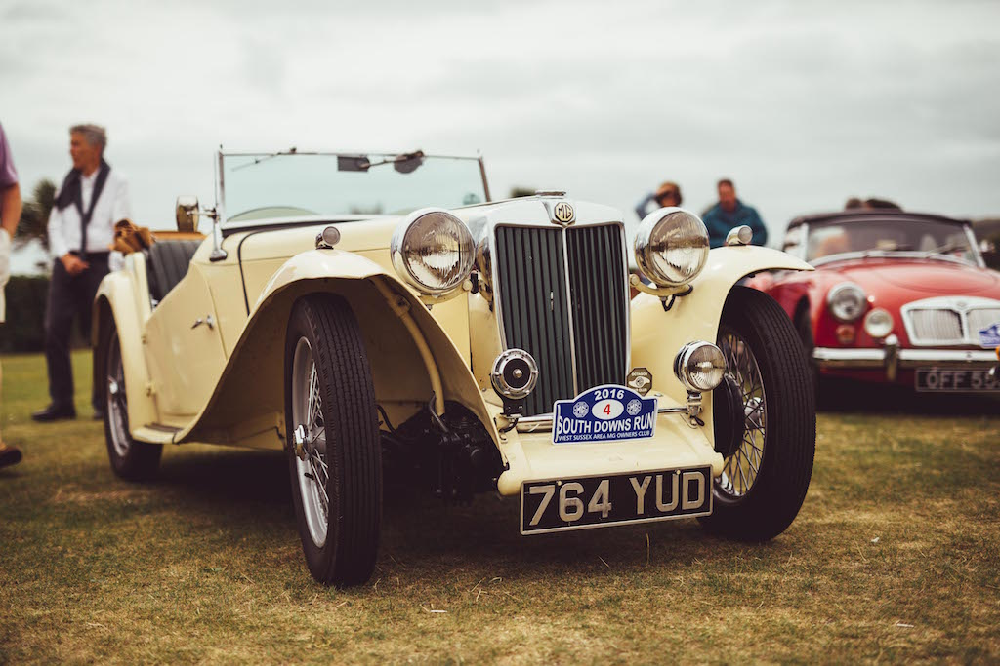
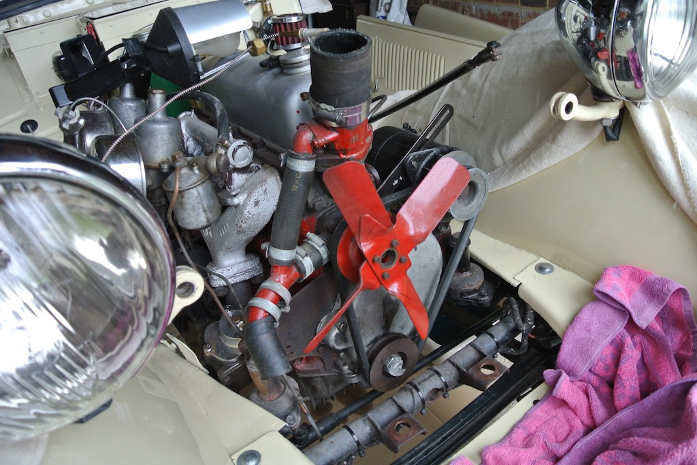
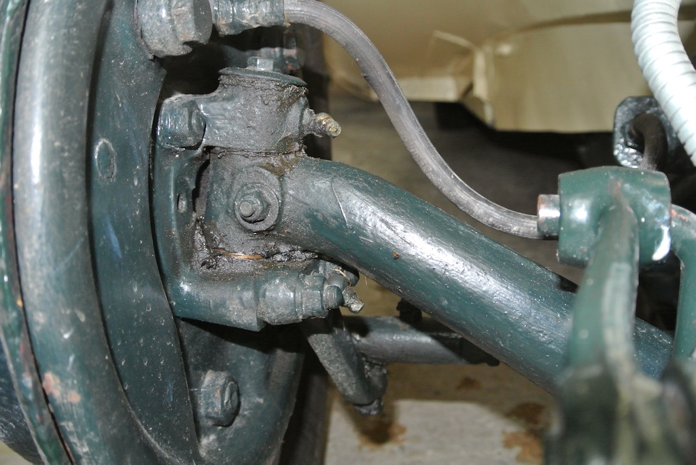
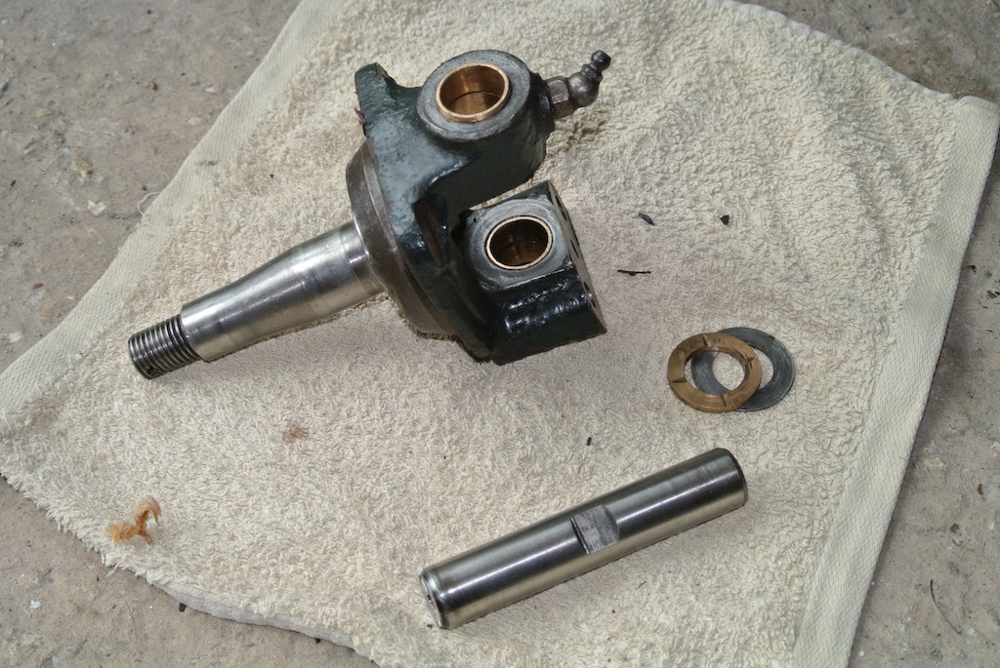

It Started with a Service
As the title of this article states, ‘it started with a service’, but led to more drastic remedial work. As owners of classic MGs (and other cars) you will have plenty of experience of servicing your cars and be aware that doing so helps you appreciate the state of the various parts and therefore further work that needs to be done. I’ve run old (20 year old) cars in the past, but my memory of the effort needed to keep them on the road had obviously dimmed with the passage of time!
As I’ve said before, I’d wanted a TC since I was 19 and so 48 years later decided to buy a car that required only maintaining, so that it could be driven often. I should have known that even a drivable car, and one that looked in good condition, would need more than just ‘maintenance’. Not that I mind. As long as it’s not too cold in the garage I enjoy the challenge of each job that I do, even if Angela does object to me taking over the whole garage for days or weeks at a time. For those of you who haven’t seen TC4985 the photo shows it at the end of last year’s South Downs Run.
Things didn’t really get off to a very good start. Towards the end of June 2015 I had TC4985 transported from Essex, but soon discovered that after driving for about ten miles the brakes would lock on all four wheels! Clearly this was a master cylinder problem, but, having not done serious work on a car for quite some time, I decided to let a local ‘classic car’ garage (one that was less than ten miles away) replace the master cylinder and do some checks on the steering. So then I had a car that I could drive places, but I also had time to inspect it in more detail. I’d already measured the chassis diagonals and the castor and camber angles and the garage had checked the tracking, and everything seemed to be pretty much as I had expected. However, I did notice that a bracket at the bottom of the radiator was rusty. So towards the end of August I started dismantling the front of the car! I removed the bonnet, radiator shell and then the radiator, complete with the offending bracket. I probably should have bought a new one, but I decided to de-rust the old bracket, paint it and fit new rubber mountings. With the radiator out it was easy to access the engine mounts, the rubber parts of which were quite cracked. So I replaced them at the same time. In the photo you can see a distinct lack of radiator, but also easy access to the engine mounts.
When the brake master cylinder was replaced the mechanic commented that the handbrake cables had stretch and really needed replacing. So I bought the two new cables from the MG Octagon Car Club, removed the old ones and fitted the new ones. That sounds simple, but every fixing point presented difficulties and I fitted the cable on each side three times in all! And still I hadn’t done a complete service. In fact, before I did so, I discerned a distinct smell of petrol when I was out in the car one day meeting up with some ex colleagues. I discovered that the fuel sender unit was leaking. The TC doesn’t have a fuel gauge, just a light on the dash that turns on when the float in the tank drops below a certain level. Luckily, the tank is strapped to the back of the car and removing the spare wheel holder results in easy access to the sender unit. However, not only did I need to drain the tank, remover and dismantle the unit and make a new gasket, I had to clean up the unit and the area of tank below it and paint them. And I still hadn’t done a complete service.
The manual that comes with the car, known as the ‘brown book’ due to the colour of its card cover, contains considerably more detail than modern day car handbooks. I suppose there aren’t many controls, so the space devoted to them is small and most of the pages are taken up with things such as how to dismantle the cylinder head. There is a good chart showing which lubricants to use where, but there is no simple list of all the regular maintenance jobs that need doing and the recommended intervals between them. However, a TC owner in Australia has helpfully produced one. So at the beginning of April last year I finally started my first full service of TC4985. As part of the exercise I wanted to remove the front hubs so as to re-pack the bearings with grease and generally inspect their condition. I’d read that the spindles around which the hubs rotate were a weak link and, after many years of hard driving, are prone to crack and break off! The author of ’TCs Forever’, the so-called ‘bible’ of TC restoration, wrote that the spindles generally break when the car is performing low speed manoeuvres and that you would hear the drums starting to rub on the brake shoes as the spindles cracked! This was not a situation that I particularly wanted to experience, even at low speed.
Now the castellated nuts holding the hubs on to the spindles are ‘handed’. The near side has a left hand thread and the off side a right hand thread. In this way, the nuts are ‘self-tightening’ as the wheels roll forward. However, I discovered that on my car the threads were reversed. In other words, the stub axles had been put on the wrong sides! For those not familiar with this type of construction, each stub axle is attached to the front beam axle by a roughly vertical king pin, allowing it to rotate as the steering moves. The brake backplate is fixed to the knuckle of the stub axle and the hub (and thus wire wheel) rotate around the spindle part of the stub axle. In this photo you can see the axle going off to the right, with the rear of the back plate on the left. The grubby bit in the middle is the knuckle of the stub axle. If you look very carefully you can just see a small hole in the knuckle, slightly forward of the king pin. That hole should hold the steering stop bolt. Not only should there be a bolt head covering the hole, but it should be to the rear of the axle.
Naturally I removed the stub axles and re-installed them on the correct sides. Luckily the king pins and their bushes were in good condition and I only needed to replace thrust washers, shims and cotter pins. The photo shows one stub axle off the car, along with the king pin, thrust washer and shim. Needless to say, while the stub axles were off the car I decided to do a crack test on the spindles. Some members of the mg-tabc discussion group said “your car is old and has probably been driven hard, so just replace the spindles and be safe”. However, the spindles looked in good condition and so I really decided to do a crack test so as to prove to myself that I didn’t need to replace them, a major job for which I didn’t have the tools.
I used a dye-penetrant kit consisting of three aerosol cans; one containing cleaner, one with the dye that would penetrate into any defects and one containing ‘developer’ that would show any cracks. After removing contamination with the cleaner I sprayed on the purple dye and left it for 20 minutes to seep into any defects. Then I cleaned off the surface dye, again with the contents of can one, and sprayed on the white foamy developer from can three. After about ten minutes the purple dye from a potential crack at the root of the spindle had leached out into the developer! This happened on both spindles. So I now had the evidence that I didn’t want and needed to investigate how to go about getting the spindles replaced.


You may have noticed that the whole stub axle, knuckle and spindle, is machined from a single piece of metal. So it is necessary to cut off the spindle, bore a hole through the knuckle and then force a new spindle into the hole from the rear, heating the knuckle and freezing the spindle beforehand. This means finding someone who can supply new spindles machined from the correct grade of steel and then someone who can bore the hole accurately in the knuckle and force in the new spindle. Luckily, one of the mg-tabc online group had the equipment and experience to do the work and lived in Guildford. However, the only two sources of new spindles were in Devon and near Toronto (yes, in Canada). The man in Devon didn’t answer my email (even though I’d bought parts from him before) so the spindles were shipped over from Canada. PayPal makes such transactions very easy these days. In fact, we bought an extra pair of spindles, on the basis that someone else would want them in the near future and so as to share the delivery costs.
My final photo shows the off-side stub axle, complete with new spindle, installed on the car, before the brake backplate was refitted. Since then we’ve taken TC4985 on the South Downs Run and on a number of runs with the Sussex Wanderers, in between which I have replaced the cracked and crumbling rubber bushes in the front and rear springs with black polyurethane versions. Something else that I noticed when doing my first full service!
(Written 21st March 2017; published in WSMGOC Main Gear, May 2017.)
© David James 2020 Last updated: 18th April 2020